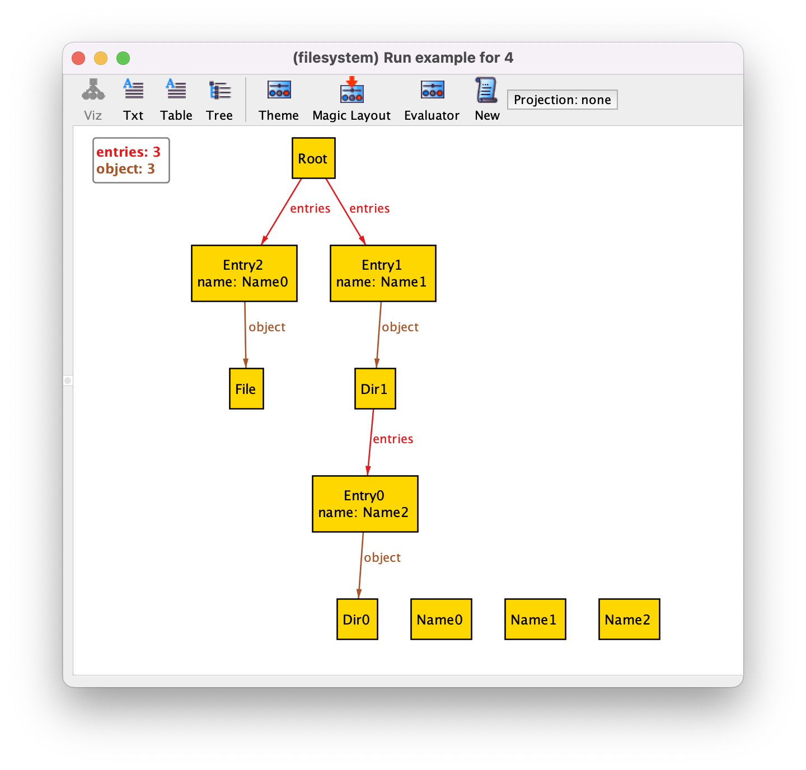
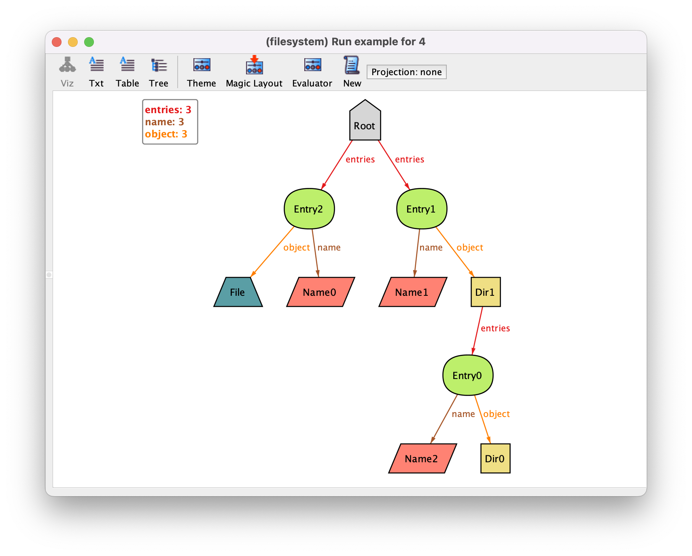
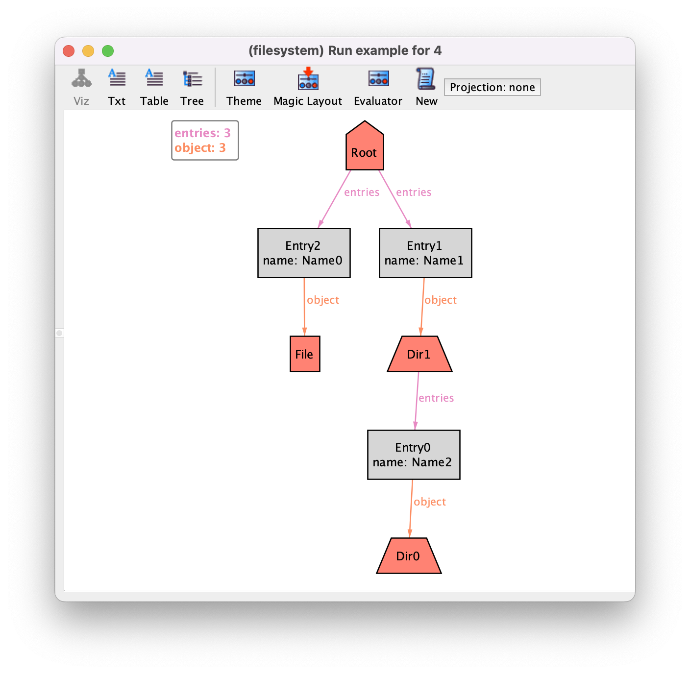
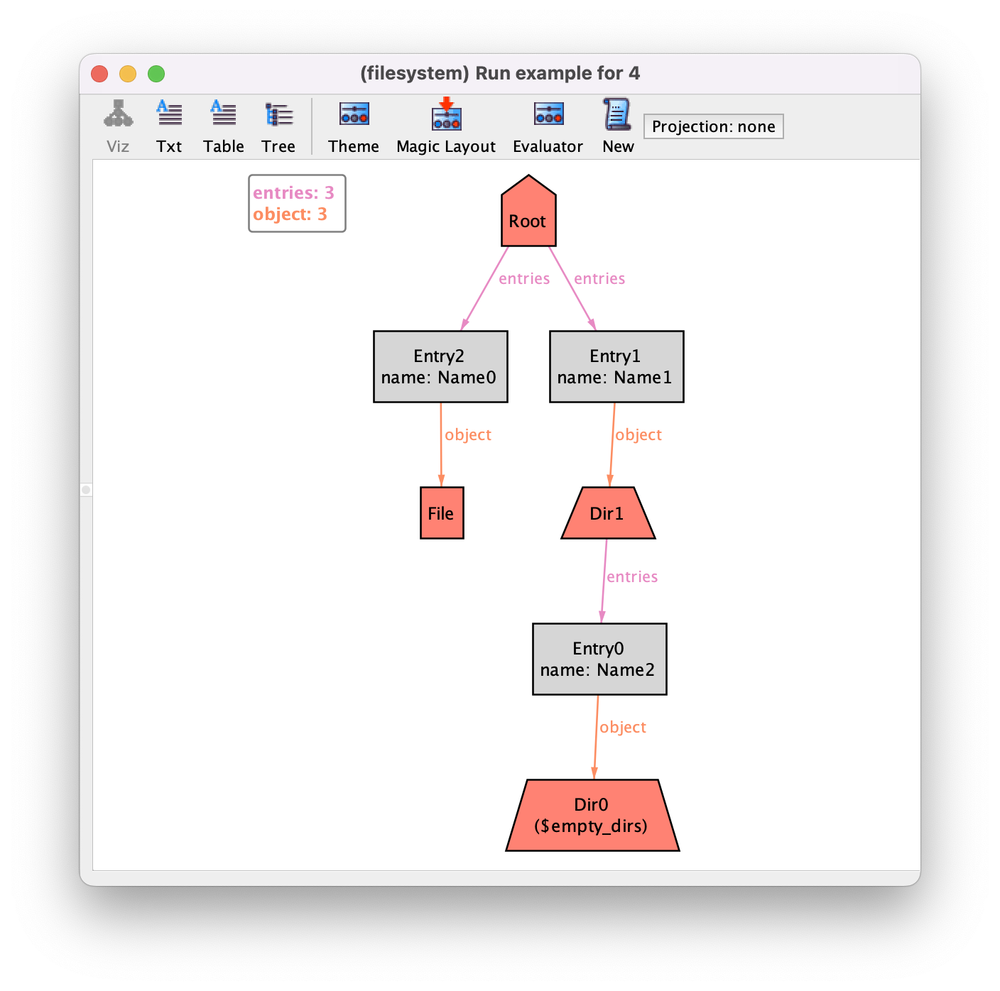
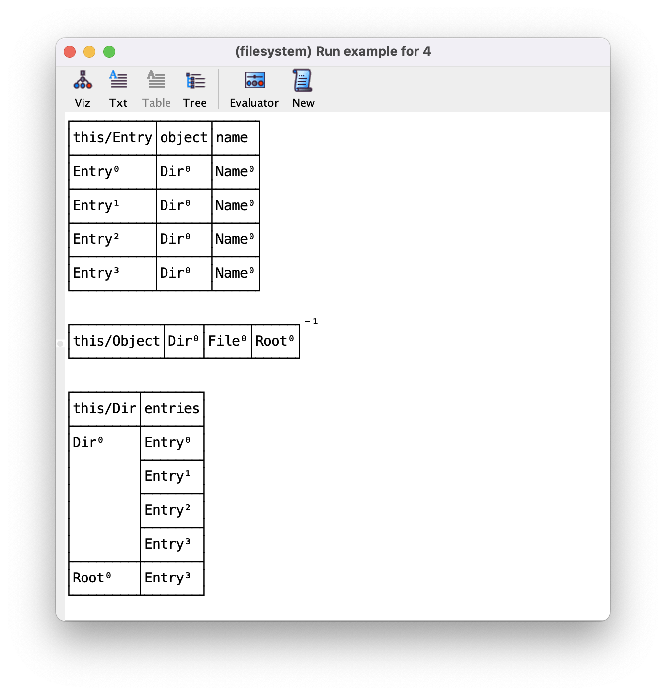

Visualization customization#
The visualizer provided by the Analyzer is one of the most popular features of Alloy, since it allows the inspection and navigation of scenarios or counter-examples. However, as models become more complex, the interpretation of instances becomes more challenging. To ease this process, the visualizer allows the graphical visualization of instances to be customized through themes.
Theme customization#
Let us get back to our file system example from the main chapter
Structural modeling and focus on an instance generated by command
example. With the default visualization of the instances, it looks as
follows.
{kind=link}
To customize it, we can open the theme customization menu, by pressing the
button Theme in the toolbar of the instance visualizer pop-up
window. The first customization we will apply is to show the names of directory
entries as attributes in the respective atoms, instead of using arrows pointing
to the name. This will unclutter substantially the depiction and is a very
common customization for fields of multiplicity one, in particular for
fields that somehow act as identifiers, as is the case of name. To do
so, first select the field name, and then tick the Show as
attribute option in the top pane. This option will show the name of an entry as
an attribute but still keep the respective arrows. To remove them, tick twice
Show as arcs to choose the Off option. Your theme
options for relation name should look as follows.
{kind=link}
By pressing Apply in the toolbar and then Close the instance will now be depicted as follows.
{kind=link}
We now have some unconnected Name atoms. Since names were only
used in directory entries, where they are now shown as attribute, we
can remove them from the graph. To do so, select Theme
again (actually when changing many options it is better to keep the
theme customization menu open and just keep pressing Apply
without closing it to see the effect), select the Name signature,
and then tick the Show option twice to choose the
Off option. After pressing Apply the
Name atom will disappear.
{kind=link}
Another common customization is to give different colors (or different shapes and borders) to atoms belonging to different signatures. First, we will select a different color palette, with more subdue colors. First select the general graph settings, and select the Martha (for Martha Stewart) palette both for node and edge colors. After pressing Apply we will get some nice faded colours.
Todo
update figure to 6.1, hide skolems option
{kind=link}
Since entries are auxiliary structures in defining the (supposedly)
tree-like structure of the file system, we will paint them grey. To do
so select signature Entry, then the colour Gray in
the drop-down menu in the top left-hand corner, and finally Apply.
{kind=link}
For file system objects we will choose a more eye-catching red color. We don’t
have to set this colour separately for signatures Dir, Root and File. By default
most theme options of extension signatures are set as Inherited from
their parent signature. As such, it suffices to set the color red for the
Object signature, and both their children will inherit this setting.
Finally we will choose different shapes for different file system objects. Let’s
keep files as rectangles, but choose the shape Trapezoid for
directories and a House for the root. The shape can be chosen in the
drop-down menu in the top right-hand corner. The combo-box to the left of that
one changes the style of the border. After pressing Apply we have
the following visualization.
{kind=link}
One last customization that is often useful is to change the label of an element in the graph, be it a signature, a subset or relation (for instance, to make it shorter, or to removed the namespace prepended to elements from other modules). This can be changed in the text box in the top left-hand corner after selecting an element.
Todo
should we mention the magic color for sigs/fields added in 6.1? also, color-blind friendly palette?
Managing themes#
For the moment these are all the customizations we will use, and so we can close the theme customization menu. Notice that you can always reset your theme settings by going to the menu option . You can also save your theme for later use in the option . Occasionally it is also useful to have multiple themes for the same model, highlighting different facets of the instances.
Instead of customizing manually your theme, you can also try out the Magic Layout button in the toolbar of the instance visualizer. This will “magically” choose options for visualizing the different elements of your specification based on the signature and field declarations. Sometimes the results are good enough and it will save you some work. The result of magic layout for our instance is the following.
{kind=link}
More information about how the magic layout actually works can be found in [LED07]. In this case we prefer our handmade customization and so we will load back our previously saved theme by selecting in the menu.
{kind=link}
Improved visualisation with derived relations#
Alloy supports the definition of derived relations through the declaration of
functions. These are declared with the keyword fun, followed by the
function name, an optional list of function parameters, its return type, and an
expression enclosed between braces. The return type can be any relational
expression with arbitrary arity. Once declared, these functions can be freely
used in relational expressions. Additionally, parameterless functions are also
processed by the visualizer and presented alongside the signatures and fields of the instance, even if not
used in the specification at all. This section shows how to explore this feature for further tweaking instance visualization.
Let’s say that we want to highlight in our visualization the directories that are empty. A possibility would be to introduce a new subset signature and restrict its value to always be the set of empty directories. However, due to the nature of the Alloy analysis procedures, such a signature would have to be solved by the Analyzer, possible impacting its performance. If we introduce a function that calculates this set, the Analyzer will calculate its value after the instance is generated and present it in the visualizer. Since they are introduced by the visualizer after the solving process, they can be freely abused without undermining the performance of the analysis. Such a function that retrieves all empty directories would be defined as follows.
fun empty_dirs : set Dir {
Dir - entries.Entry
}
For instance, using the same instance as above, the visualization would now be as follows.
{kind=link}
Notice how the empty directory at the bottom has an additional label
$empty_dirs. All visualization elements introduced in the visualizer
that are not part of the model are prefixed with a $. Since function
empty_dirs returns a set, it is interpreted as a subset of Dir
which by default are shown as labels in the theme. As expected, their depiction
can be customised as any other signature. For instance, to highlight empty
directories in the depiction, open the theme customisation menu, and set the border of
$empty_dirs subset of Dir to be Dotted and the
displayed name to just empty. The resulting depiction is below. You could also hide
the label of this subset altogether by just
setting to Show as labels to Off for
$empty_dirs.
{kind=link}
Parameterless derived functions are introduced in the visualization regardless of their arity, resulting in additional edges for relations of arity higher than 1. For instance, let’s say we wanted to directly depict the relation between directories and their content, hiding the entry intermediary atoms. We could define the binary relation below in the specification.
fun contents : Dir -> Object {
entries.object
}
Running the command again results in the depiction below, with
$contents edges directly between directories and objects.
{kind=link}
Once we start introducing derived relations, it is often useful to hide others
elements in order to unclutter the visualizer. In this case, we simply set
Show to Off for the Entry signature, resulting
in the compact depiction below where the content of directories is evident.
{kind=link}
A consequence of short-circuiting entries in the visualizer is that we can no
longer see the name of the objects inside a directory. Relations with arity
higher than 2 are depicted in the visualizer as edges with labels. Thus, a
ternary relation between signatures Dir, Name and
Object could be used to directly show the content of a directory but
also show its name in a label. Defining such relations is often not trivial, and
usually requires defining relations by comprehension. In this case this ternary
relation could be defined as follows.
fun named_contents : Dir -> Name -> Object {
{ d : Dir, n : Name, o : Object |
some e : Entry | e in d.entries and e.name = n and e.object = o }
}
Here, we are collecting all triples d->n->o such that there is an
entry in d that has name n and object o. The resulting
depiction is shown below, where the names of the objects inside directories can be seen as a label of the $named_contents edges.
{kind=link}
Alternative visualizations#
As a last note, it is worth mentioning that the Analyzer also supports alternative visualizations other than the graph one we’ve explored in this chapter. In the visualizer toolbar, buttons Viz, Txt, Table, and Tree control the representation of the instance. Option Viz is the default graph representation, while the other 3 are textual representations of the relations in plain text, tabular format, and in hierarchical structure. For illustration purposes, below is the representation of the same instance in tabular format, where each table denotes a signature and the associated fields. Despite the usefulness of the graph visualization, when instances become too complex these barebones representations can prove helpful.
{kind=link}